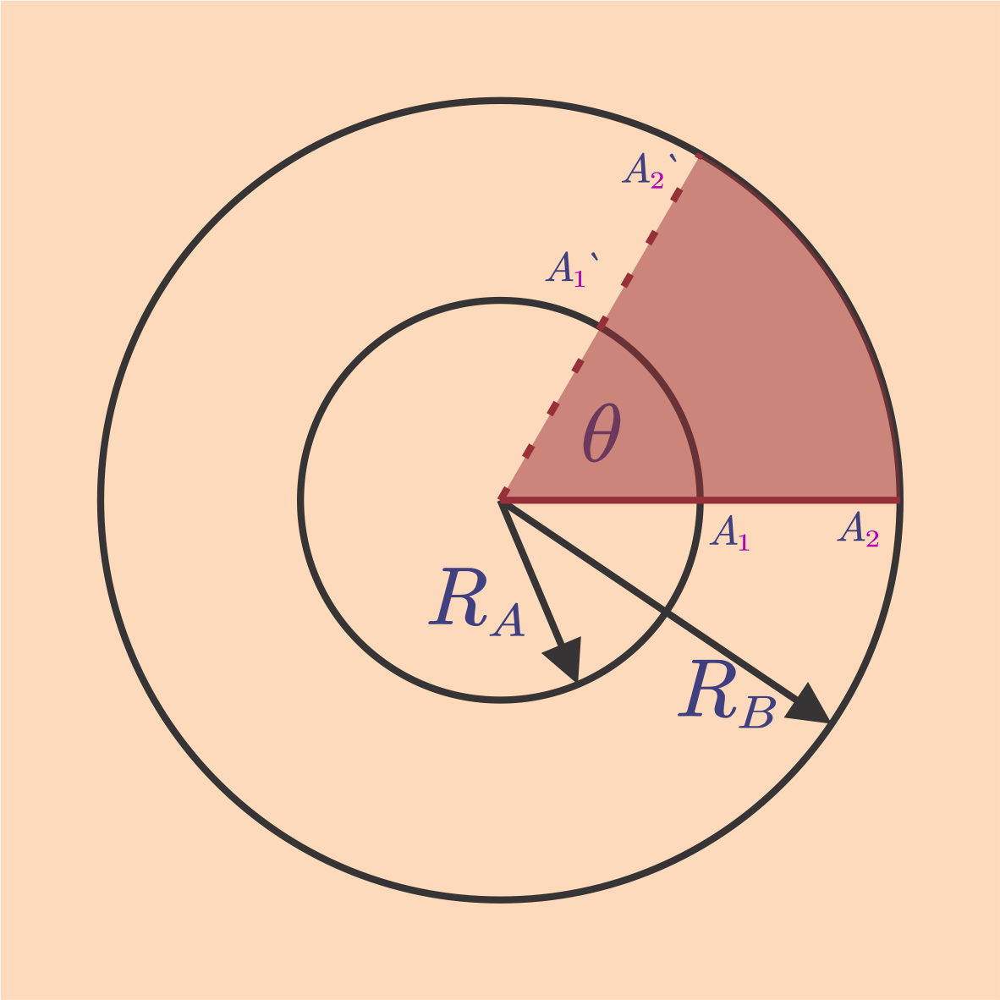
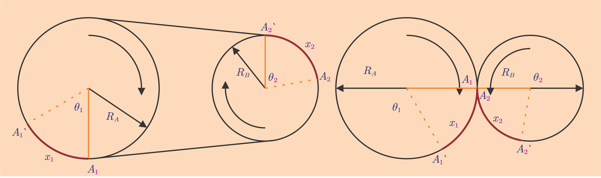

# Gerak dalam Dua Dimensi - Gerak Parabola - Gerak Melingkar --- ## Gerak Parabola - Gerak parabola merupakan gerak dalam dua dimensi, yang umumnya disepakati sebagai dimensi *X* (horizontal) dan *Y* (vertikal). Dalam gerak parabola, posisi benda tidak hanya berubah secara horizontal tetapi juga vertikal, dan karenanya dapat diuraikan ke dalam dua dimensi tersebut untuk memudahkan analisis. --- - Secara vertikal, benda tersebut mengalami gerak vertikal ke atas dan/atau gerak jatuh bebas; sementara secara horizontal, benda tersebut mengalami GLB. - Dalam gerak parabola, pengaruh hambatan udara atau gesekan udara diabaikan, dan percepatan gravitasi bernilai tetap (misal g = 9,8 m/s<sup>2</sup> atau g = 10 m/s<sup>2</sup>). --- ### Gerak Setengah Parabola - Gerak setengah parabola adalah kombinasi gerak jatuh bebas dan gerak lurus beraturan. - Pada gerak ini, benda berada di ketinggian tertentu dan diberi kecepatan awal sebesar v<sub>0</sub> yang arahnya mendatar. Sehingga, --- - *$v_x=v_0\rArr$* kecepatan awal arahnya hanya horisontal - *$x=v_xt=v_0t$* - *$v_{y0}=0\rArr$* tidak ada kecepatan awal vertikal - *$y=h=\frac 1 2 gt^2$* - *$v_{yt}=gt=\sqrt{2gh}$* --- ### Gerak Parabola Penuh - Gerak parabola penuh adalah kombinasi gerak vertikal ke atas dan gerak lurus beraturan. - Benda diberi kecepatan awal sebesar *v<sub>0</sub>* dengan sudut elevasi *α* terhadap bidang datar. - Vektor kecepatan awal itu dapat diuraikan menjadi *$v_{0x}=v_0\cos\alpha$* dan *$v_{0y}=v_0\sin\alpha$*. - Dengan demikian, --- - *$v_x=v_{0x}=\boxed{v_0\cos\alpha}\rArr$* kecepatan tetap - *$x=v_xt=\boxed{v_{0}\cos{\alpha}\ t}$* - *$v_{0y}=v_0\sin\alpha\rArr$* kecepatan berubah - *$v_{y}=v_{0y}-gt=\boxed{v_0\sin\alpha-gt}$* - *$y=h=v_{0y}t-\frac 1 2 gt^2=\boxed{v_{0}\sin{\alpha}\ t-\frac 1 2 gt^2}$* --- - Waktu untuk mencapai tinggi maksimum dan ketinggian maksimum dapat kita ambil dari persamaan dalam GVA, yakni, ###### $$t_B=\frac{v_{0y}}{g}=\frac{v_0\sin\alpha}{g}$$ $$y_B=v_0\sin\alpha\ t_B-\frac 1 2 gt_B^2$$ $$y_B=v_0\sin\alpha\Big(\frac{v_0\sin\alpha}{g}\Big)-\frac 1 2 g\Big(\frac{v_0\sin\alpha}{g}\Big)^2$$ --- $$y_B=\frac{v_0^2\sin^2\alpha}{g}-\frac 1 2 \frac{v_0^2\sin^2\alpha}{g}$$ ###### $$y_B=\frac{v_0^2\sin^2\alpha}{2g}$$ --- - Dalam gerak parabola berlaku sifat simetri sehingga gerak B-C adalah cerminan dari gerak A-B. Maka, waktu naik = waktu turun, kelajuan awal = kelajuan akhir, sudut elevasi naik = - sudut elevasi turun, dsb. ###### $$t_C=2t_B=2\frac{v_{0y}}{g}=2\frac{v_0\sin\alpha}{g}$$ --- $$x_C=v_xt_C=v_{0}\cos{\alpha}\ t_C$$ ###### $$\begin{split}x_C&=v_{0}\cos{\alpha}\ 2\frac{v_0\sin\alpha}{g}=\frac{2v_0^2\sin\alpha\cos\alpha}{g}\cr&=\frac{v_0^2\sin 2\alpha}{g}\end{split}$$ --- <a href="frm01.html" data-preview-link>Simulasi Gerak Parabola</a> --- ## Gerak Melingkar ### Gerak Melingkar Beraturan - Gerak melingkar beraturan adalah gerak dalam lintasan berupa lingkaran dengan kelajuan tetap (atau dengan kecepatan sudut tetap). - Gerak melingkar beraturan juga merupakan gerak dalam dua dimensi. Tetapi, karena dalam GMB, posisi benda selalu berjarak sama dari pusat lingkaran (=jari-jari), vektor posisi umumnya dinyatakan bukan dalam notasi *x* dan *y*, melainkan *θ*. --- - Maka, sebenarnya lintasan GMB yang berupa lingkaran ini dapat kita anggap sebagai lintasan yang lurus dan persamaan-persamaan GLB dapat dipakai di sini. Bedanya, setiap satu putaran penuh (360°), lintasan tersebut berulang. - <a href="frm02.html" data-preview-link>Simulasi Gerak Melingkar</a> - Jika diamati, vektor posisi benda dapat dinyatakan dalam koordinat Cartesian, *(x,y)*. Tetapi akan lebih mudah dalam koordinat polar, *(r,θ)*, karena nilai *r* selalu tetap. --- - Jika dalam GLB, perpindahan dinyatakan dalam $\Delta x=x-x_0$, dalam GMB, perpindahan disebut sebagai *perpindahan sudut* dan dinyatakan sebagai: ###### $$\Delta \theta=\theta-\theta_0$$ Keterangan: - *Δθ* = Perpindahan sudut (rad atau °) - *θ* = Sudut akhir (rad atau °) - *θ<sub>0</sub>* = Sudut awal (rad atau °) --- - Arah gerak searah jarum jam dinyatakan sebagai arah negatif, sedangkan arah sebaliknya sebagai positif. - Besar *θ* dapat dinyatakan dalam derajat (°), dalam putaran (360° = 1 putaran), atau dalam radian. - Satu radian didefinisikan sebagai: ###### $$\theta (rad)=\frac x r\implies x=\theta r$$ --- - dengan *x* adalah panjang busur yang ditempuh. - Untuk satu putaran penuh, panjang busur itu sama dengan keliling lingkaran (*$x=2\pi r$*) sehingga *$1\ \text{putaran}=360\degree=2\pi\ \text{rad}$*. Dengan perbandingan itu, **1 rad = 57,3°**. --- - Kecepatan dan kelajuan dalam GMB juga dinyatakan dalam kecepatan sudut (*$\vec{\omega}$*) dan kelajuan sudut (*$\omega$*). Sama seperti dalam GLB, kecepatan sudut juga didefinisikan sebagai hasil bagi perpindahan (sudut) dan selang waktu. ###### $$\omega=\frac {\Delta\theta}{\Delta t}$$ --- $$\omega=\frac {\Delta\theta}{\Delta t}=\frac {\Delta(\frac x r)}{\Delta t}$$ ###### $$\omega=\frac {v}{r}\implies v=\omega r$$ Keterangan: - *ω* = Kecepatan sudut (rad/s) - *v* = Kecepatan linear (m) --- ### Periode, Frekuensi, Kecepatan Linear, Kecepatan Sudut - Dalam GMB, periode adalah waktu yang diperlukan untuk menempuh satu putaran penuh. Satuannya adalah *s* (sekon). - Frekuensi dalam GMB adalah banyak putaran yang ditempuh dalam waktu satu detik. Satuannya adalah *s<sup>-1</sup>* (sepersekon) atau putaran per detik. --- ###### $$T=\frac 1 f\implies f=\frac 1 T$$ - Untuk satu putaran penuh, perpindahan linear yang ditempuh partikel sama dengan satu keliling lingkaran. Dengan demikian, ###### $$v=\frac{\Delta x}{\Delta t}=\frac{2\pi r}{T}=2\pi r f$$ ###### $$\omega=\frac v r=\frac{2\pi}{T}=2\pi f$$ --- ### Percepatan Sentripetal - GMB memiliki kecepatan tetap, tetapi mengapa ada percepatan? - Kecepatan serta kecepatan sudut dalam GMB memang besarnya tetap. Tetapi arah kecepatan selalu berubah (<a href="frm02.html" data-preview-link>vektor!</a>). --- - Percepatan, sebagaimana kita tahu adalah perubahan kecepatan setiap detiknya. $$\vec{a}=\frac{\Delta \vec{v}}{\Delta t}=\frac{\omega\Delta \vec{r}}{\Delta t}$$ - Karena *$\frac{\Delta \vec{r}}{\Delta t}=v$*, ###### $$\vec{a}=\vec{a}_s=\omega\vec{v}=\omega^2\vec{r}=\frac{v^2}{r}$$ Keterangan: - *a<sub>s</sub>* = Percepatan sentripetal (m/s<sup>2</sup>) --- ### Gerak Melingkar Berubah Beraturan - Jika GMB dapat disejajarkan dengan GLB, demikian pula GMBB (Gerak Melingkar Berubah Beraturan) juga dapat disejajarkan dengan GLBB. Benda dikatakan mengalami GMBB jika ada percepatan sudut (*α*) yang nilainya tidak sama dengan nol. Maka selain terdapat kecepatan tangensial, terdapat juga percepatan tangensial (*a<sub>t</sub>*) yang berbeda dengan percepatan sentripetal. --- - Hubungan percepatan sudut dan percepatan tangensial adalah: ###### $$\alpha=\frac{\vec{a}_t}{r}$$ Keterangan: - *α* = Percepatan sudut (rad/s<sup>2</sup>) - *a<sub>t</sub>* = Percepatan tangensial (m/s<sup>2</sup>) --- - Dengan demikian kita mempunyai tiga hubungan GLB/GLBB dengan GMB/GMBB, yakni ###### $$\theta=\frac{\vec{x}}{r}$$ ###### $$\omega=\frac{\vec{v}}{r}$$ ###### $$\alpha=\frac{\vec{a}_t}{r}$$ --- Kesejajaran GLB/GLBB dan GMB/GMBB | Gerak | jarak/perpindahan | kecepatan | percepatan | |---|---|---|---| | GLB | *$x=vt$* | **$v=v_0=konstan$** | *$a=0$* | | GLBB | *$x=v_0t+\frac 1 2 at^2$* | **$v=v_0+at$** | *$a\not=0$* | | GMB | *$\theta=\omega t$* | **$\omega=\omega_0=konstan$** | *$\alpha=0$* | | GMBB | *$\theta=\omega_0t+\frac 1 2 at^2$* | **$\omega=\omega_0+\alpha t$** | *$\alpha\not=0$* | --- ### Hubungan Roda-roda - Salah satu penerapan atau aplikasi dari gerak melingkar adalah <a href="frm03.html" data-preview-link>hubungan roda-roda</a>. - Misalnya, cakram padat (*hard-disk*) berputar dengan kecepatan 500 rpm (*rotation per minute*). *$\text{Satu putaran}=360°=2π \text{ rad}$*, sehingga *$500\text{ rpm}=\frac{500×360°}{60 s}= 3000°\text{/s}=\frac{50\pi}{3}\text{ rad/s}$* --- - Kecepatan sudut ini berlaku di permukaan cakram mana pun. Tetapi kecepatan linearnya di setiap titik belum tentu sama. Titik di tepi cakram pasti akan bergerak lebih cepat dari titik di bagian dalam. Hal ini dikarenakan titik yang di sebelah luar menempuh jarak yang lebih panjang. Sementara titik di pusat lingkaran pasti hanya akan diam saja. ---  - Dalam gambar di atas, ketika *A1* bergeser menjadi *A1'*, *A2* juga bergeser menjadi *A2'*. Panjang busur *A2-A2'* pasti lebih panjang daripada *A1-A1'*. Tetapi sudut yang ditempuh keduanya sama, yakni sebesar *θ*. --- - Inilah arti hubungan *$x=\theta r$* dan *$v=\omega r$*. - Dapat disimpulkan bahwa untuk lingkaran-lingkaran sepusat, kecepatan sudutnya sama. Sedangkan kecepatan linearnya tidak sama, melainkan sebanding dengan perbandingan jari-jarinya. ###### $$\omega_1=\omega_2$$ ###### $$\frac{v_1}{r_1}=\frac{v_2}{r_2}\implies \frac{v_1}{v_2}=\frac{r_1}{r_2} $$ --- - Contoh untuk roda-roda sepusat adalah gir belakang dan roda belakang pada sepeda. - Selain dihubungkan secara sepusat, roda-roda juga dapat bersinggungan atau dihubungkan dengan sabuk (*belt*). Misalnya, gir depan dan gir belakang yang dihubungkan dengan rantai, atau roda-roda gigi dalam jam mekanik yang saling bersinggungan satu sama lain. ---  - Untuk roda-roda yang bersinggungan dan dihubungkan dengan sabuk seperti dalam gambar di atas, ketika titik *A1* bergeser menjadi *A1'*, *A2* juga bergeser menjadi *A2'*. Panjang busur *A2-A2'* sama dengan *A1-A1'*. Tetapi sudut yang ditempuh masing-masing (*θ<sub>1</sub>* dan *θ<sub>2</sub>*) tidaklah sama. --- - Dapat disimpulkan bahwa untuk lingkaran-lingkaran bersinggungan dan dihubungkan menghubungkan sabuk, kecepatan linearnya sama. Sedangkan kecepatan sudutnya tidak sama, melainkan berbanding terbalik dengan perbandingan jari-jarinya. ###### $$v_1=v_2$$ ###### $$\omega_1 r_1=\omega_2 r_2\implies \frac{\omega_1}{\omega_2}=\frac{r_2}{r_1} $$